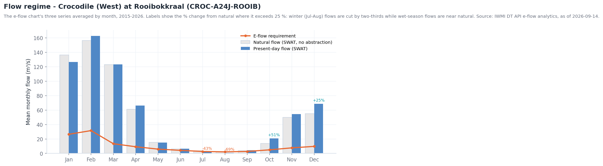
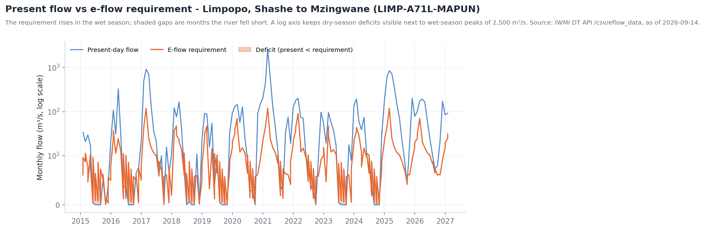
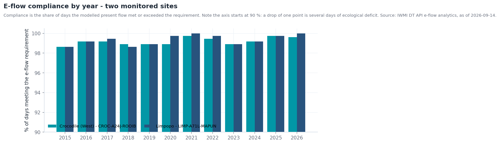

Caudais ecológicos (e-flows)¶
A pergunta¶
Um ecólogo, um regulador de bacia ou um operador de barragem precisa de saber se cada troço do Limpopo está a receber o caudal de que o seu ecossistema precisa, onde os caudais caíram abaixo dos níveis de alerta, e como uma alteração das descargas ou das captações alteraria o risco ecológico.
| Quem | Decisão | Frequência |
|---|---|---|
| Reguladores ambientais (DWS, ZINWA, DNGRH, DWA) | Fazer cumprir a Reserva Ecológica / EWR; aprovar ou recusar licenças de captação | Revisão mensal de conformidade |
| Operadores de barragens | Dimensionar e calendarizar descargas ambientais | Semanal na época seca |
| Agências de parques e conservação (SANParks, Gonarezhou, PN do Limpopo) | Acionar respostas de seca para a biota aquática | A cada mudança de nível de alerta |
| Grupo de trabalho de e-flows da LIMCOM | Reporte transfronteiriço de caudais ecológicos | Trimestral |
Em resumo
- 31 locais monitorizados em 16 troços fluviais, cada um com uma Categoria Ecológica Recomendada (maioritariamente C; o troço do estuário é D) e uma região de risco (RR1–RR10).
- Os alertas vão do Nível 1 (requisito cumprido) ao Nível 5 (défice severo). O texto do alerta indica o reforço necessário, p. ex. "Add 2.709 m³/s to the river to maintain E-flows".
- Crocodile (West) em Rooibokkraal: os caudais de inverno estão 43–69 % abaixo do natural (captações), os de verão são quase naturais; conformidade de 98,6–99,7 % dos dias por ano desde 2015.
- Limpopo, troço Shashe–Mzingwane: caudal mensal médio de 102 m³/s, picos até 2 575 m³/s; défices mensais quase todas as épocas secas.
Como se encadeia o fluxo de trabalho¶
flowchart TD
A[E-flow Monitoring and Forecasting<br/>+ Eflow Alert Levels] --> B{Algum local em<br/>Nível 3-5?}
B -- não --> M[Relatório mensal de conformidade]
B -- sim --> C[Clicar no local:<br/>gráfico caudal presente vs E-flow]
C --> D[Atribuir o défice<br/>SWAT Incremental Contributions<br/>SWAT and Observed Sites]
D --> E{Causa?}
E -- Bacia seca --> F[Resposta à seca<br/>ver Secas]
E -- Captação / armazenamento --> G[SWAT Extraction Tool<br/>testar cenário de descarga · risco PROBFLO]
G --> H[Decisão de descarga / captação]
F --> M
H --> MDados a utilizar¶
| Conjunto de dados | Onde no catálogo | O que indica |
|---|---|---|
| E-flow Monitoring and Forecasting | Drought Monitoring & Risk Assessment → Hydrological Drought & E-flows | Caudal presente modelado vs requisito de caudal ecológico, por local, com previsão — clique para o gráfico |
| Eflow Alert Levels | mesmo grupo | Classe de alerta atual (1–5) em cada local, com o reforço necessário |
| Eflow Warnings · E-Flow Warning Status (LIMIS) | mesmo grupo; Ecosystems → E-Flow Modeling & Risk | Troços atualmente em aviso |
| E-flow Risk Regions | mesmo grupo | As dez regiões de risco ecológico (RR1–RR10) |
| Environmental Water Requirements (LIMIS) · EWR Assessment Sites (LIMIS) | Ecosystems → E-Flow Modeling & Risk | As determinações formais de EWR e os seus locais |
| SWAT Modelled Discharge · SWAT and Observed Sites | Water Resources → Streamflow Monitoring | Caudal presente modelado e as estações contra as quais é verificado |
| SWAT Incremental Contributions | Water Use Monitoring and Analysis → Basin Water Balance | Quanto caudal cada sub-bacia acrescenta ao rio |
| Aquatic Ecoregions (LIMIS) · camadas Suitability Class / Suitability Map · Fish Survey Sites (LIMIS) | Ecosystems → Ecological Monitoring | Contexto ecológico para interpretar um défice |
| MiniSASS Sites · Fish Activity · Water Quality | Citizen Science | Observações de terreno da saúde do rio |
| SWAT Extraction Tool | Ferramentas do mapa (canto inferior direito) | Consultar caudais modelados para um canal e intervalo de datas; o separador PROBFLO liga caudal a risco ecológico |
Percurso¶
- Explore data → pesquise
E-flow→ adicioneE-flow Monitoring and Forecasting. Os locais aparecem ao longo da rede fluvial, identificados pelo código do rio (p. ex.LIMP-A71L-MAPUN,CROC-A24J-ROOIB). - Adicione Eflow Alert Levels por cima. A cor indica a classe atual; comece pela pior (vermelho escuro = Nível 5).
- Clique num local. O gráfico abre com quatro séries — SWAT Present Flow, E-Flow (o requisito), Availability Surplus e Deficit. Passe o cursor sobre um ponto para ler valores; arraste no gráfico ou escolha datas de início e fim para ampliar uma estação. As Figuras 1–2 explicam o que está a ver.
- Adicione SWAT Incremental Contributions para perceber porquê: um défice num local a jusante com contribuições saudáveis a montante aponta para captação ou armazenamento intermédio, não para uma bacia seca.
- Adicione SWAT and Observed Sites e compare o caudal modelado com a estação mais próxima no gráfico — é a medida da confiança no modelo naquele troço.
- Teste de cenários. Abra a SWAT Extraction Tool (ícone inferior
direito). Escolha o Flow Type (Natural Flows ou Present Flows),
introduza o Channel ID mostrado na informação do local (p. ex.
cha0978para o local do Crocodile), defina Start / End Date e FETCH DATA. Use o separador MAP para confirmar o canal, TABLE para os números e PROBFLO para ver a categoria de risco ecológico implicada pelo caudal. - Adicione Aquatic Ecoregions (LIMIS) e as camadas Suitability para ponderar um défice pela sensibilidade do troço; adicione MiniSASS Sites para ver se os índices de saúde fluvial da ciência cidadã concordam.
- Capture o mapa de alertas e o gráfico como Story para o comité de caudais ecológicos.
Interpretar os gráficos¶
Os gráficos são gerados a partir da API de dados do portal; os rótulos estão em inglês.


- O requisito de caudal ecológico segue a sazonalidade natural — mais alto em jan.–mar., mais baixo em jul.–set. — porque os ecossistemas precisam de cheias e não só de caudal de base.
- É no inverno que o troço sofre: em julho e agosto os caudais presentes estão 43 % e 69 % abaixo do natural e ficam no requisito, sem margem. Os caudais de verão estão próximos ou acima do natural (retornos e descargas).
- A leitura prática: este troço não precisa de mais água na época das chuvas; precisa de caudal de base protegido na época seca.


- Os défices (sombreados) concentram-se em ago.–nov. todos os anos e foram mais longos nas secas de 2015–16 e 2023–24, quando o rio deixou de correr durante vários meses.
- O requisito da época das chuvas (~30–120 m³/s) é quase sempre cumprido; os picos de 300–2 500 m³/s são as cheias descritas em Cheias.
- Como o eixo é logarítmico, uma pequena diferença visual no inverno pode ser todo o caudal de base: um défice de 2 m³/s contra um requisito de 2,3 m³/s é Nível 5.


- Uma conformidade de 99 % ainda significa 3–5 dias de défice por ano — e esses dias caem nas mesmas semanas críticas de caudal baixo. Reporte os dias de défice e o défice máximo, não só a percentagem.
- A conformidade manteve-se mesmo em anos de seca porque o próprio requisito é baixo na época seca; o dano ecológico está em quanto tempo duram os períodos de défice (as análises do portal indicam a duração máxima por local).
Níveis de alerta e o que fazer¶
| Nível de alerta | Significado | Ação típica |
|---|---|---|
| Nível 1 | Caudal presente ≥ requisito | Nenhuma; registar conformidade |
| Nível 2 | Caudal presente até ~10 % abaixo do requisito | Notificar captadores; rever descargas |
| Nível 3 | Défice moderado | Reduzir captações não essenciais no troço |
| Nível 4 | Défice grande; previsão a agravar | Descarga ambiental do armazenamento a montante; restringir irrigação |
| Nível 5 | Défice severo (caudal quase nulo) | Descarga de emergência; suspender licenças; monitorizar a biota (mortandade de peixes, qualidade da água) |
A mensagem de alerta indica o reforço em m³/s — o número a entregar ao operador da barragem.
Exemplo prático — atribuir um défice de inverno¶
- Em agosto, Eflow Alert Levels mostra o local do Crocodile (West)
CROC-A24J-ROOIBem Nível 3. - Clique no local: SWAT Present Flow está em ~0,8 m³/s contra um E-Flow de 2,1 m³/s (Figura 1, agosto) — um défice de ~1,3 m³/s.
- Adicione SWAT Incremental Contributions: as sub-bacias a montante ainda contribuem alguns m³/s, portanto a bacia não está seca.
- Adicione SWAT and Observed Sites; a estação mais próxima confirma o caudal baixo — o modelo é fiável aqui.
- Abra a SWAT Extraction Tool, Flow Type Natural Flows, canal
cha0978, junho–setembro do ano corrente: o caudal natural de agosto é ~2,6 m³/s. O défice é captação e armazenamento, não clima. - Separador PROBFLO: a 0,8 m³/s o troço está numa faixa de risco ecológico elevado; a 2,1 m³/s desce para moderado. Essa diferença — 1,3 m³/s durante oito semanas — é o pedido de descarga.
Lista de verificação do relatório de conformidade¶
- Nível de alerta por local (mapa capturado como cena de Story)
- Para cada local em Nível 3+: caudal presente, requisito, défice (m³/s) e duração
- Atribuição: contribuição da bacia vs captação / armazenamento
- Concordância da estação com o modelo
- Cenário testado na SWAT Extraction Tool e risco PROBFLO antes/depois
- Descarga ou ação de licenciamento recomendada, com volume e duração
Limites a ter em conta¶
- Todos os caudais aqui são saídas do modelo SWAT, calibradas com estações. Onde a estação mais próxima discorda do modelo, dê peso à estação.
- Os requisitos de caudal ecológico são eles próprios produto de um método de avaliação; as categorias de risco PROBFLO são probabilísticas, não limiares de dano.
- As séries mensais suavizam os extremos diários — um mês conforme em média pode conter uma semana de caudal nulo.
- Os gráficos dos locais e a SWAT Extraction Tool chamam a API de dados do IWMI e exigem sessão iniciada.
Relacionado¶
Secas · Monitorização de albufeiras · Contabilidade da água · Ferramentas do Mapa — Ferramenta de extração SWAT